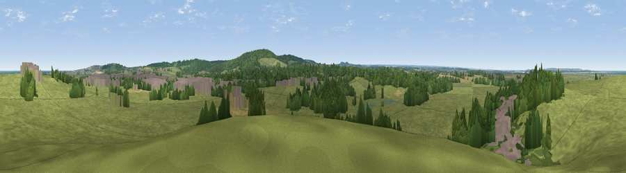

Viewpoint near Graveney
#25904 in England · top 36% of its area beats it · near Graveney · access?Where it is
The exact computed spot (TR 06675 62475). Click the marker for map links.
Public access: no public right of way or access land is recorded at this exact spot — it may be on private land. Computed from Natural England's CRoW access layer and OpenStreetMap rights of way — not the legal definitive map. Always verify locally.
The view, rendered

A 360° render of this exact spot computed from the terrain model, tree cover and land cover — summer colours, afternoon light, calibrated against photographs of famous viewpoints. Real trees, hedges and buildings will differ in detail.
The panorama
Grey silhouette: terrain skyline in each direction (720 bearings, Earth curvature and refraction included). Dashed green: skyline with trees (+15 m) and buildings (+8 m) as obstacles. Blue strip: how far the ground is visible on each bearing.
Where the view opens
Wedge length = distance to the farthest visible ground on that bearing (vegetation-aware). Rings at 10, 25 and 50 km.
What fills the view
67% grassland · 19% woodland · 7% built-up · 5% cropland · 1% water ·
Angular shares of the visible panorama (visual magnitude), not map area. Landscape diversity 0.44 (0–1 Shannon).
Key numbers
More beautiful places nearby
The staircase of upgrades: each row has a higher view potential than everything closer. Driving times are estimates from straight-line distance, calibrated against real road routing — check an actual route before setting out.
| Place | Direction | Drive | Score |
|---|---|---|---|
| Victory Woods Link Sculpture | ESE · 3 km | ~7 min | 50.7 |
| Viewpoint near Yorkletts | ENE · 3 km | ~8 min | 60.9 |
| Viewpoint near Boughton Aluph | SSW · 14 km | ~26 min | 66.7 |
| Viewpoint near Wye | S · 16 km | ~28 min | 70.9 |
| Viewpoint near Westwell | SSW · 17 km | ~29 min | 72.2 |
| Tolsford Hill | SSE · 26 km | ~42 min | 77.9 |
| Viewpoint near Capel-le-Ferne | SSE · 30 km | ~47 min | 80.2 |
| Viewpoint near Willingdon | SW · 77 km | ~101 min | 83.4 |
51.32382, 0.96487 · source: screening · position refined by local search. Computed location — check access rights before visiting.